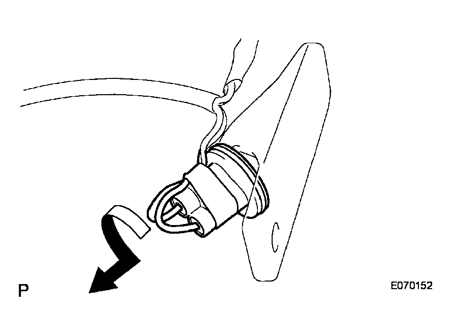

License Plate Light Assembly: Disassembly
REMOVE LICENSE PLATE LIGHT BULB
Remove the license plate light socket as shown in the illustration.
Remove the light bulb from the socket.
Fig 1: Removing License Plate Light Socket

Courtesy of © TOYOTA, LICENSE AGREEMENT TMS1002